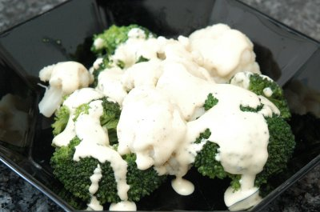

| Zutaten für 4 Personen: | |
| 400 g | Blumenkohl |
| 400 g | Broccoli |
| 1 TL | Senf, scharf |
| 1 EL | Weinessig |
| 1 EL | Öl |
| 100 g | Halbrahm sauer |
| 1 TL | Estragon frisch gehackt |
| Salz | |
| Pfeffer | |
Blumenkohl in kleine Röschen teilen. Von den Broccoli die Röschen abschneiden. Die Broccolistengel in kleine Scheiben schneiden. Die Gemüse gut waschen und auf einen Siebaufsatz geben. Einen passenden Topf halbhoch mit Wasser füllen, aufkochen, den Siebaufsatz darauf stellen und die Gemüse zugedeckt 6 Minuten garen.
Für die Sauce den Senf, den Essig und das Öl gut verrühren. Den sauren Halbrahm zufügen und mit Salz und Pfeffer abschmecken. Die Röschen anrichten und noch warm mit der Sauce begiessen. Mit Estragon bestreuen und sofort servieren.
Herbert Eigenmann, Code: KOT
Schmeckt fein. Kann aber auch als Beilage funktionieren. RE 21.4.2008
@LINKBACK_TAG@ @WAKELOCK@